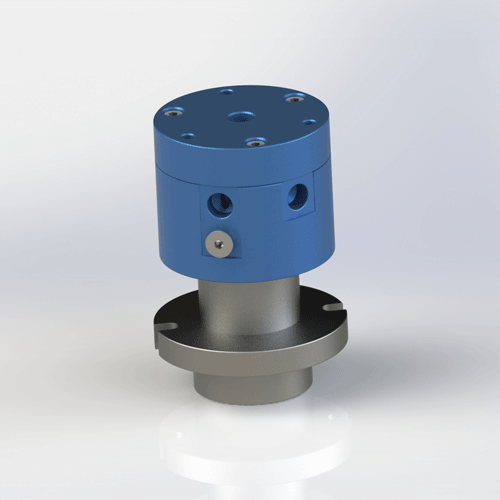

Laser tube cutting equipment often needs stable rotating transfer for assist gas, pneumatic clamping, blow-off, and cooling support. Begapunk helps machine builders match passage count, sealing structure, and mounting layout before production.
In a tube cutting machine, the rotary joint is not just a spare part. It sits in the rotating path where gas or pneumatic pressure must remain stable while the head, chuck, or fixture changes position.
If the flow path is too small, pressure drop affects cutting quality. If the hose load is not controlled, the seal can wear early. If the wrong material is selected, dry gas, heat, and vibration can shorten service life.

Typical requirementMulti-passage air transfer for assist gas, pneumatic motion, and compact machine integration.Confirm whether the line carries compressed air, nitrogen, oxygen, coolant support, or vacuum. Gas cleanliness and pressure stability matter more than catalog size alone.
Separate assist gas, clamp release, blow-off, and sensor-related pneumatic functions when independent control is required.
Review the chuck, cutting head, and anti-rotation bracket position before selecting thread, flange, or custom mounting.
| Machine Area | Common Function | Selection Focus | Begapunk Direction |
|---|---|---|---|
| Rotary chuck | Clamping and unclamping air | Stable pressure, compact flange, hose protection | 2P or 3P pneumatic rotary joint |
| Cutting head rotation | Assist gas and blow-off | Clean flow path, low leakage, correct port size | Custom multi-passage air rotary union |
| Tube handling system | Air cylinder actuation | Moderate speed, repeatable pneumatic transfer | BP-2P or BP-3P standard family |
Send the current drawing, port layout, media, pressure, RPM, and mounting space. Begapunk can review the interface and suggest a suitable pneumatic rotary joint.
Yes, but the passages should be separated and sized according to pressure, flow, and sealing requirement.
Yes. For OEM projects, Begapunk can provide 2D drawings and 3D files after the model or custom layout is confirmed.